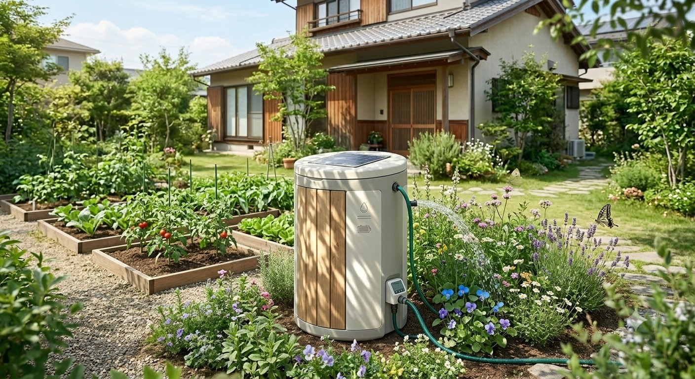

ピコぬ市では、雨水を単なる排水の対象としてではなく、街を支える大切な水資源のひとつとして考えています。 雨水の一時的な貯留や再利用を進めることで、集中豪雨への備えや水資源の有効活用、夏季の暑さ対策につながる取り組みを推進しています。 大規模な設備だけではなく、家庭の庭やベランダなど、身近な場所でできる小さな水循環も、街全体の環境づくりを支える大切な取り組みです。
ネオ雨水貯水タンク

雨の日の水を、庭と街の未来へ。
ネオ雨水貯水タンクは、屋根などに降った雨水を一時的に貯留し、庭づくりや暑さ対策に活用する家庭向け循環設備です。 貯めた雨水は、植物への散水や打ち水などに利用できます。ピコぬ市では、「水を使い捨てない暮らし」を目指し、 ネオ雨水貯水タンクの普及を進めています。
主な機能
雨水貯留機能
屋根などに降った雨水をタンクへ集め、必要な時に利用できます。雨の多い時期には一時的な貯留場所となり、晴れた日には庭や植物のための水として活用できます。
自動散水機能
温度・湿度などの環境情報をセンサーが確認し、植物に適したタイミングで自動散水を行います。水やりの負担を減らしながら、植物が育ちやすい環境づくりを支援します。
ソーラー電源
太陽光発電による自立型電源を採用しています。電源工事を必要とせず、設置しやすい循環設備として家庭で利用できます。
打ち水活用
庭への散水だけでなく、夏季の打ち水にも活用できます。舗装面や建物周辺の温度上昇を和らげ、快適な暮らしづくりに役立てられています。
活用例
- 家庭菜園への散水
- 庭木・花壇への水やり
- 夏季の打ち水
- 公共施設周辺の緑地管理
緑化・土づくりとの連携
雨水は、植物を育てる大切な資源です。ネオ雨水貯水タンクで集めた水は、市民庭づくり助成制度や 生き物共生型庭園認定制度など、「育てる庭」を支える取り組みともつながっています。 水を育てることは、街の緑を育てることにつながります。
本制度は暮らしと循環推進課が担当し、水資源の有効利用について水道局と連携しています。